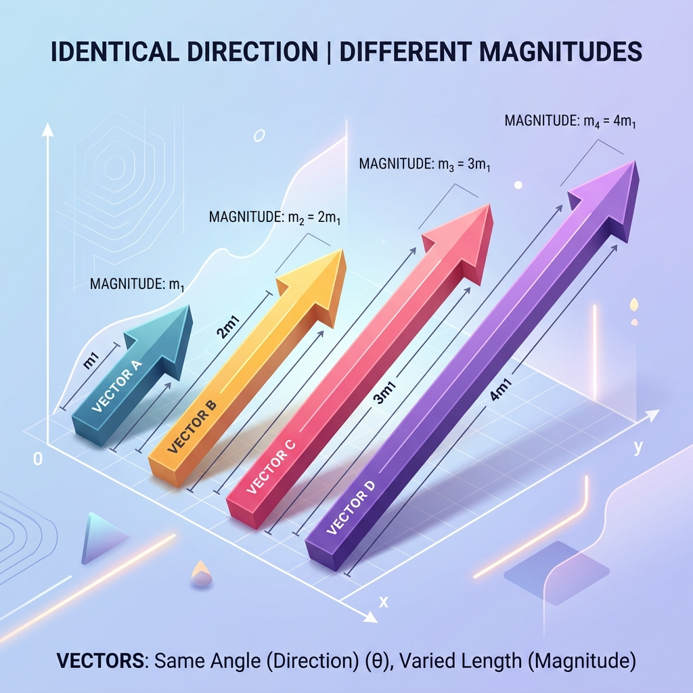
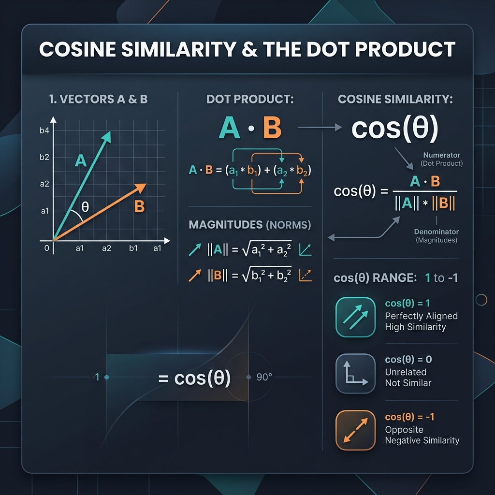
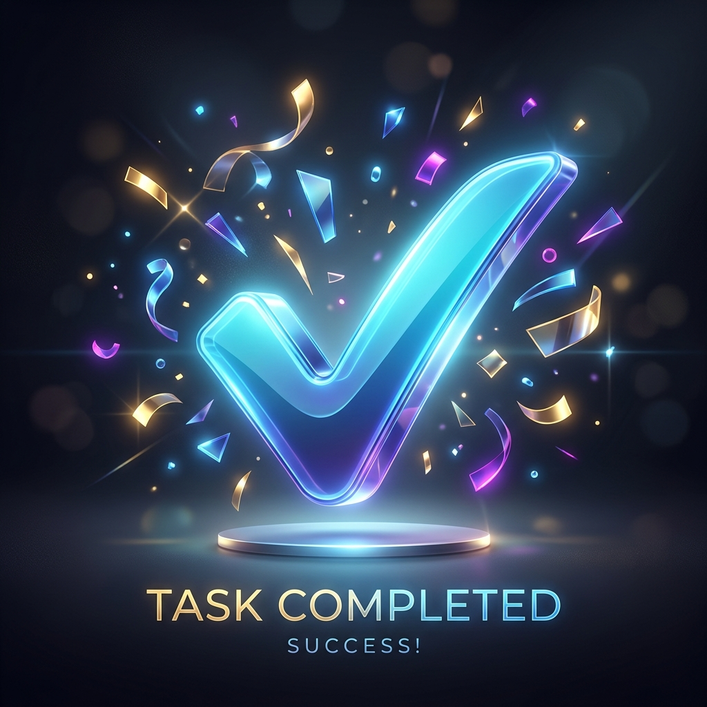

A beautifully visual 6-step deep dive into embeddings and search architecture.
Before we can calculate similarity, we have to understand how AI "thinks" about language. Traditional relational databases (like SQL) use exact keyword matching. For example, if you search "Apple", it simply looks for the letters A-P-P-L-E. It does not know if you mean the fruit or the iPhone company.
Modern AI neural networks operate profoundly differently—they map concepts into a giant mathematical space called a Vector Database. Imagine a galaxy where every star is a piece of data.
The process of converting a word, sentence, or entire document into a vector is called an Embedding. A machine learning embedding model reads your documents, token by token, and converts the context into a floating-point number array.
Because the meaning dictates the numbers, synonyms like "car" and "automobile" will generate numbers that are nearly identical. This allows the computer to literally "calculate" the difference between concepts.
Interactive Visualization: Click any word below to plot its vector coordinate in our simplified 2D meaning space.

Any vector in space possesses two core properties: Magnitude (its total length) and Direction (the angle at which it points).
Think about a huge 5,000-word Wikipedia article about Golden Retrievers versus a tiny 5-word tweet saying "Golden Retrievers are good boys." Because the article has orders of magnitude more words, its embedding vector will be extremely long (large magnitude), while the tweet's vector is very short. However! Because they are communicating the exact same topic, they will physically point in the same direction.

Cos(θ) calculates the cosine of the angle between two vectors. It is mathematically defined as the dot product divided by the product of their magnitudes. The resulting score operates cleanly on a scale between 1 and -1.
This mathematics drives the biggest AI boom of our generation: RAG. Here is the step-by-step pipeline:
Select a simulated user query to trigger the RAG Search Engine:

Congratulations! You have successfully mastered Semantic Vector Spaces, Text Embeddings, Magnitudes, Angles, Dot Products, and the complex Retrieval-Augmented Generation architectures utilized in modern Large Language Models and Vector Databases.